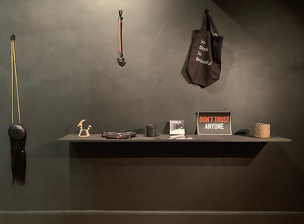

nègre
Simone Bailey
December 4-30, 2018
Simone Bailey wanted to create a store that celebrates all things black. The result was nègre.
Artist Simone Bailey will convert Dream Farm Commons into a store for the month of December. nègre is a black-walled minimalist-chic boutique that sells black things made by black people. Playing upon all uses of the word "nègre" allows for the work to confront and inspire multiple questions of value, economy, and site by highlighting how we value blackness in Western capitalist society, objects versus bodies, and the gallery as contested space and site for exchange, comfort, and provocation.
The basic concept of the store is that it sells black and predominately-black colored items made by members of the African diaspora. More than that, the project's about using the boutique format to highlight blackness in a space where boutiques are potent symbols of the displacement of long-standing black communities. It's also about drawing attention to the ways in which blackness is (under)valued in our society by creating a space where blackness is hypervalued.
nègre's highly curated selection, which focuses on products made by Bay Area artisans, works within Bailey's conceptually precise framework in a space that engages both gallery visitors and casual shoppers. Bailey's role within nègre is that of a shopkeeper and she will be at nègre during all open hours to engage with customers. Her mantra of "Welcome to nègre! We sell beautiful black things!" draws attention to the rarity of spaces in which blackness is valued and promoted.
